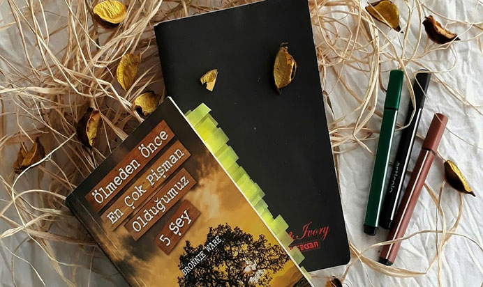
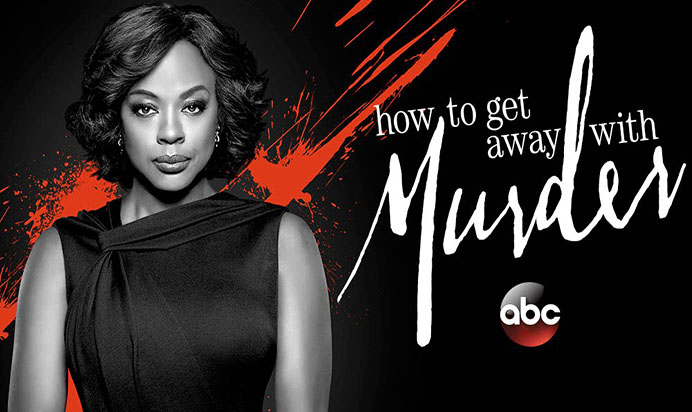

Ölmeden Önce Pişman Olduğumuz 5 Şey
Blogun ilk kitap yazısında direkt olarak zorlayıcı bir kitapla giriş yapmak ne
kadar doğru oldu bilmiyorum ama karşınızdayım.
Bu kitap hem bir solukta okuduğum hem de nefes almak için araya boşluklar koyduğum bir kitap oldu.
Kitap aslında Bronnie Ware’in otobiyografisinden oluşuyor. Bronnie Ware’in asıl
mesleği
bankacılıktır. Bir gün anlık gelen bir kararla hayatını değiştirmeye karar verir.
Bütün eşyalarını satıp işinden ayrılır ve arabasına atlayıp aklı nereye eserse oraya seyahat etmeye
başlar. Bu süreçte çeşitli işler yapar farklı kesimlerden insanlarla tanışır,
uzun zamandır istediği yaşamı yaşıyordur.
Devamını Oku

Merlin
Sizlerle izlediklerimi paylaşacaksam buna, beni yabancı dizi izlemeye alıştıran
ve sevdiren “Merlin” dizisinden başka bir diziyle başlayamazdım. Her ne kadar eski bir dizi olsa da
hala ilk gün ki heyecanı yaşattığını ve ilgiyi gördüğünü düşünüyorum. Bu diziyi izlemediyseniz bile
mutlaka bir yerlerden duymuş, bir kere de olsa görmüşsünüzdür.
Dizimizin konusuna gelecek olursak. Dizi Kral Arthur efsanelerine ve onunla
ortak bir kadere sahip olan gizemli büyücü Merlin ile aralarındaki ilişkiye dayanır. Dizinin
başlangıcında Merlin Camelot Krallığı’na gelir ve büyü becerilerini orada yaşayan amcası yardımıyla
geliştirmeye başlar.Dizide büyünün ve doğaüstü yaratıkların diyarı Camelot’ta ileride önemli bir
büyücü olacak Merlin’in...
Devamını Oku..

Vazgeçmemek
İlham veren şarkı: Stuff We Did
Henry Miller'ın Uykusuzluk kitabında da bahsettiği gibi acılarından ortaya
sanatsal bir şeyler çıkarmaktır mesele olan...
Herkes birtakım acılar yaşar. Meziyet; acıları yaşamak değil, onları
biçimlendirebilmektedir. Unutmayın ki, sadece acı çeken kişi acılarını bilir. Yani acılarınızın
dilinden ancak siz anlarsınız. Her ne kadar "Acılar paylaştıkça azalır." deseler de, gece yastığa
kafanızı koyduğunuz anda onlarla siz baş başa kalırsınız. Bir ömür geçirirsiniz.Mevsimler, yıllar,
yüksek olasılıkla çevrenizdeki insanlar değişir ancak acılar oldukları yerde kalırlar. Hatta
müdavimi olurlar.
Devamını Oku..

Simyacı
Paulo Coelho denildiği zaman belki de akla gelen ilk kitap “Simyacı”dır. Masalsı
bir dil kullanılarak yazılan bu kitap, insana önce hayattaki kişisel menkıbesini kitaptaki tanımıyla
“Kişinin her zaman gerçekleştirmek istediği şeyi” bulmasını daha sonra ise bu menkıbenin peşinden
gitmesi öğütler.
Simyacı dünyayı gezme sevdası ile yanıp tutuşan Endülüslü Santiago’nun, yaşadığı
yer olan İspanya’dan Mısır Piramitlerine kadar uzanan yolculuğunun öyküsüdür. Başkahramanımız
Santiago ailesi tarafından rahip olması için Rahip Okulu’na gönderilir. Daha sonra asıl isteğinin
rahip olmak değil bir gezgin olmak olduğunun farkına varır ve bu mistik yolculuğa çıkar. Bu
yolculuk; Santiago’nun defalarca aynı rüyayı görmesi ve bir falcı kadının rüyayı..
Devamını Oku..

How To Get Away With Murder
Bir dizi düşünün ki her bölüm sanında “Waow! Ee peki bundan sonra ne olacak?”
tarzı tepkiler veriyorsunuz. Gidişat hakkında asla fikir üretemiyorsunuz ve sürekli şaşırtmacalarla
dolu bölümler izliyorsunuz. Sürekli zaman değişimi geçmiş-gelecek araı geçişleri sevmiyorsanız ya da
kafanız karışıyorsa geçmiş olsun çünkü dizi birazda bunun üzerine kurulu.
Dizinin konusu; Annalise Keating’in kişisel ve iş hayatı etrafında geçmektedir;
Annalise, ABD’nin en saygın hukuk okullarından biri olan, Philadelphia’daki kurgusal Middleton
Üniversitesi’nde görevli bir ceza hukuku profesörüdür. Aynı zamanda ceza savunma avukatlığı yapan
Annalise, dersini alan en iyi beş öğrenciyi seçerek ekibinde kendisiyle birlikte çalışması için bir
grup belirler...
Devamını Oku..

Yolumuz Uzun
Yürüyorum. Belki de yolun sonunu bilerek. İlk kez bir sonraki adımı düşünmeden,
en iyisini umut etmek yerine onun için çaba sarf ederek . Beni bekleyen engeller, maceralar,
sınavlar, yol ayrımları var ve ben bundan korkmuyorum. Aksine daha çok cesaret topluyorum. Daha önce
de söylediğim gibi isteklerimin getirdiği sorumlulukları göze alıyorum.
Yürüyorum. Pes etmeden, sıkılmadan, bu yolculuğun her anından zevk alarak.
İleriye ya da geriye bakmadan şu ana odaklanarak. İleriye bakmak yolculuğun heyecanını kaçırırken
geriye bakmak zaman kaybından başka bir şey değil benim için. Geride bıraktığım her şeyin bir sebebi
vardı, o an öyle gerekti ben de yaptım bu kadar. Önemli olan şu an yaptıklarım çünkü bir saniye
sonra o da geçmişe..
Devamını Oku..